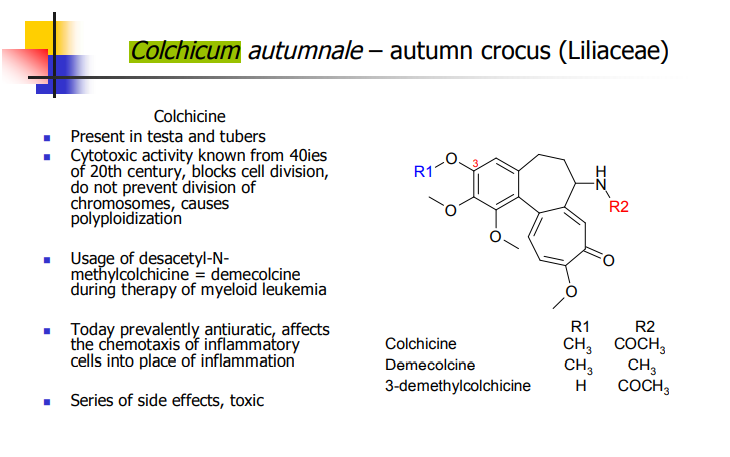
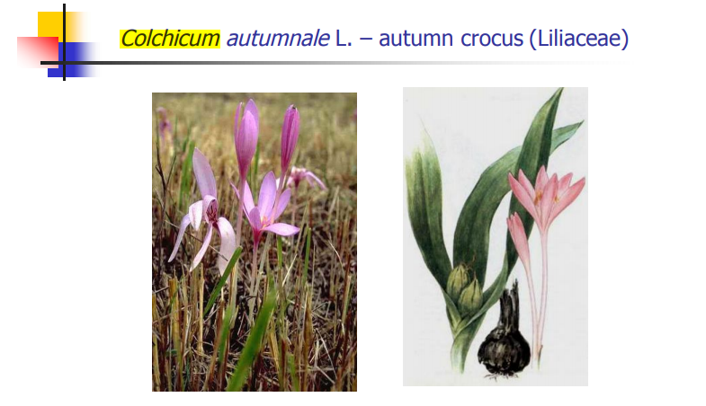
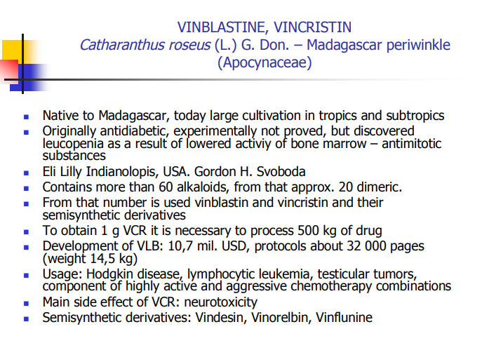
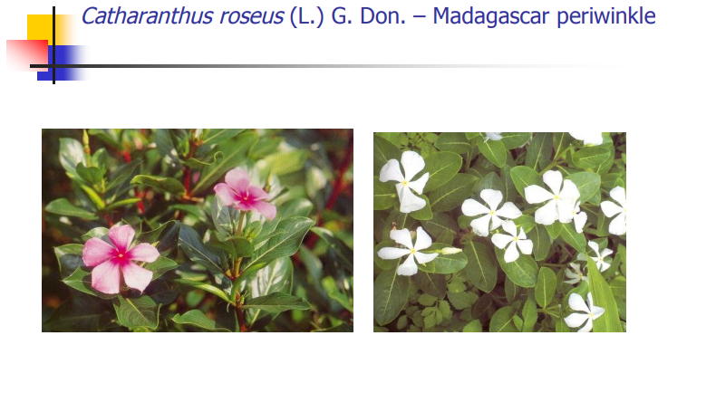
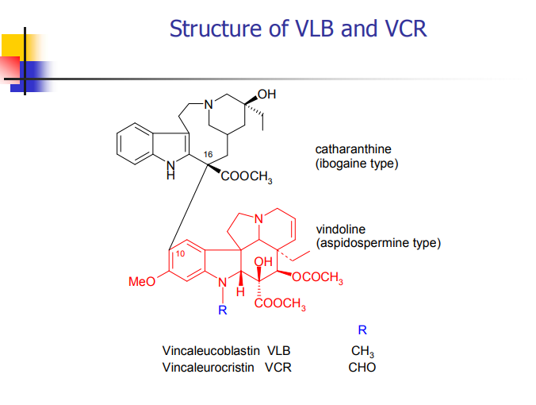
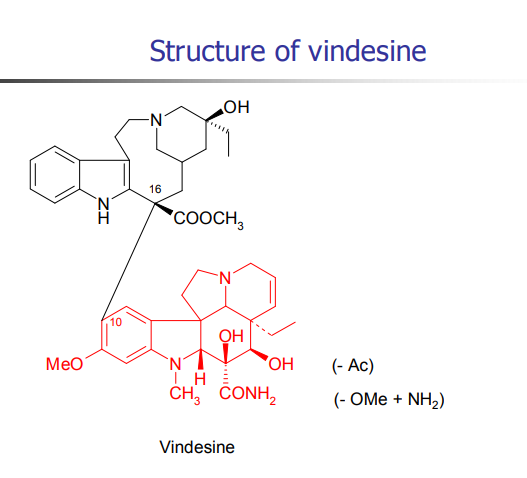

1.COLCHICUM SEED AND CORN , COLCHINE
→ Colchicum seed and corn
- from the autumn crocus or meadow saffron
- Colchicum autumnale Liliaceae
- Britain , Yogoslavia , Netherlands , Poland , Czechoslovakia ,
- Colchicum luteum → Indian medicine
→ in Arabian writings for use in gout
1.1Characters of seed
→ collected July or August
→ ovoid or globular in shape and 2-3 mm in diameter
- extremely hard
- 0.6%-1.2% of colchicine
- number of other colchicine-type alkaloids
- resin
- fixed oils
- reducing sugars
2.COLCHICINE
→ amorphous , yellowish-white alkaloid
→ darkens on exposure to light
- and give yellow coloration
- slightly soluble in ether or petroleum.
→ troppolone rings and position of the nitrogen atom is unsual
→ C.autumnale,C.byzantium
→ Ring A → carbons 5.6.7 are derived from phenylalanine
→ tropolone moiety arise from tyrosine by ring cleveage followed by closure to give a seven-membered ring.
→ richest sources of colchicine are the corns and seeds
→ leaves contain only one-fiftheenth the alkaloid content of the seed
- compared with the corms, they contain half the amount of 2-demethyl-demecocline
- the latter alkaloid can be chemically converted to demecolcine.
2.1Uses
→ Colchicum preparation used to relieve gout
- but must be emplyed with caution






3.MARTICARIA FLOWERS
→ dried-flower-heads of
- Marticaria recutita [Chamomilla recutita] Compositae
3.1Constituents
→ flower heads contain NOT LESS
- 0.4% of blue volatile oil
- mainly sesquiterpens
- a-bisabolol (some chemotypes in form of oil)
- chamazulene ( some chemotypes in form of oil)
- farnesene
- flavones and coumarines (herniarin)
- 7-9% of apigenin glucosides
3.2Uses
→ anti-inflammatory
→ spasmolytic
→ ulcer-protective
→ bisabolol-type constituents
- four optically active ismoers of bisabolol are possible
3.3Marticaria oil
→ steam distilled
→ fresh or dried flower heads or flowering tops
→ Marticaria recuitita
- rich in bisabolol oxides and (-)-a-bisabolol
- these compounds together with chamazulene are oils
- blue in colour , and have characteristic odour.
4.HORSE CHESTNUT SEED
→ Aesculus hippocastanum , Hippocastanaceae
→ western Asia
→ saponin content
- aescin
- occurs in concentrantion up ro 20% in the dried seeds
- triterpenoid saponins
- crude saponins
- sugars: — glucose — xylose — galactose — glucuronic acid — esteryfying acetic , butyric , angelic and tiglic acid
- quercitin and kaempferol and they glycosides derivatives
→ peripheral vascular disorders including hemmorhoids
→ varicose veins
→ leg uclers and bruishes
→ "escins" = are anti-inflammatory
- inhibiting the activity of lysosomal enzymes → damage capillary walls
→ CI : with anticoagulants (warfarin,tannins,flavonoids)
{kind=link}
{kind=link}
{kind=link}
{kind=link}
{kind=link}
{kind=link}
{kind=link}